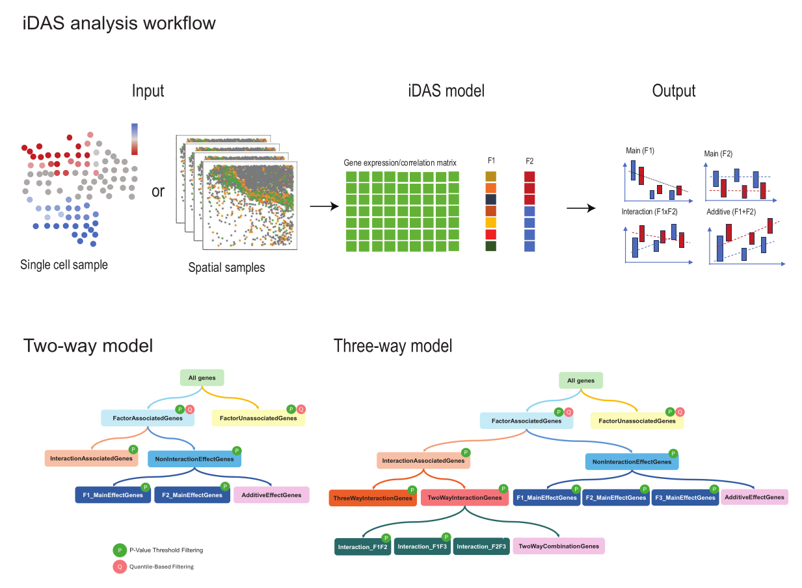

Interpretable Differential Abundance Signature
Single-cell technologies have revolutionized our understanding of cellular dynamics by allowing researchers to investigate individual cell responses under various conditions, such as comparing diseased versus healthy states. Many differential abundance methods have been developed in this field, however, the understanding of the gene signatures obtained from those methods is often incomplete, requiring the integration of cell type information and other biological factors to yield interpretable and meaningful results. To better interpret the gene signatures generated in the differential abundance analysis, we developed iDAS to classify the gene signatures into multiple categories.

Installation
The iDAS package is still under development to meet Bioconductor standards. If you have any questions, please don’t hesitate to open an issue.
## install from github
devtools::install_github("SydneyBioX/iDAS")Example command
# Example using two factors
result_twoway <- iDAS(Z = my_feature_matrix,
factor1 = group1,
factor2 = group2)
# Example using three factors
result_threeway <- iDAS(Z = my_feature_matrix,
factor1 = group1,
factor2 = group2,
factor3 = timepoint)Simulation example
Here, we provide some simple simulation example to show how to use iDAS function.
set.seed(123)
Z <- matrix(rnorm(1000), ncol = 10)
colnames(Z)=paste0("gene",1:10)
factor1 <- as.factor(rep(1:2, each = 5))
factor2 <- as.factor(rep(1:2, times = 5))
factor3 <- as.factor(rep(1:2, length.out = 10))
# Run the differential analysis using iDAS
result <- iDAS(
Z, factor1, factor2, factor3,
model_fit_function = "lm",
test_function = "parametric",
pval_quantile_cutoff = 0.02,
pval_cutoff_full = 0.05,
pval_cutoff_interaction = 0.01,
pval_cutoff_factor1 = 0.01,
pval_cutoff_factor2 = 0.01,
pval_cutoff_factor3 = 0.01,
pval_cutoff_int12 = 0.01,
pval_cutoff_int13 = 0.01,
pval_cutoff_int23 = 0.01,
pval_cutoff_int123 = 0.01,
p_adjust_method = "BH"
)Results include three table, the p-value (or adjusted p-value) table, F-statistics table, and the gene associated groups.
The Sig0 column represents the test result from the full model. Intornotint indicates whether a significant interaction effect is present. F1, F2, and F3 represent tests for gene associations with the main effects of Factor 1, Factor 2, and Factor 3, respectively. Twowaysorthreeways distinguishes whether the interaction effect is a two-way or three-way interaction. F1F2, F2F3, and F1F3 correspond to the three types of two-way interaction effects.
# Inspect results
head(result$pval_matrix)
head(result$stat_matrix)
head(result$class_df)